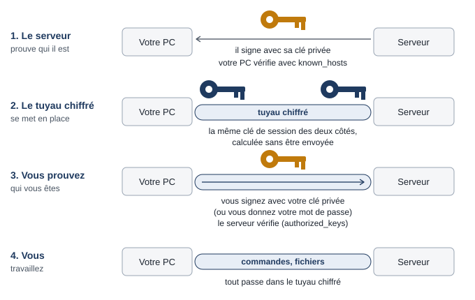
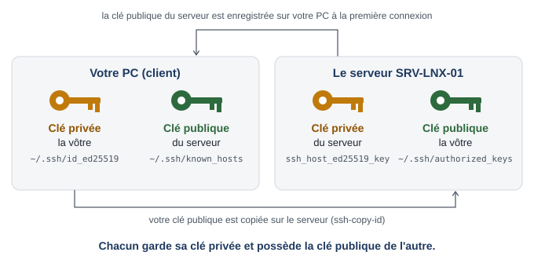

Contexte
L’audit de sécurité d’Hexalog a relevé que les serveurs Linux acceptent les connexions SSH par mot de passe, pour tous les comptes. Objectif : seuls les administrateurs, avec une clé personnelle, peuvent se connecter, et chaque connexion est traçable.
Architecture
Les deux idées à vérifier dans ce TP
Relisez d’abord la partie 3 du cours, « SSH en images ».
1. Une connexion se fait en quatre étapes : le serveur prouve qu’il est le bon, le tuyau chiffré se met en place, vous prouvez qui vous êtes (mot de passe ou clé), vous travaillez. Aux étapes 2 et 3 du TP, vous vous connectez une fois par mot de passe, une fois par clé, et vous comparez (tableau A) : seule l’étape « vous prouvez qui vous êtes » change.

2. Chacun garde sa clé privée et possède la clé publique de l’autre. À la fin de l’étape 4, vous faites l’inventaire des clés de chaque machine (tableau B).

Les clés que vous allez manipuler
| Clé | Propriétaire | Clé privée (ne bouge jamais) | Clé publique (copiée chez celui qui vérifie) | Sert à | Étapes du TP |
|---|---|---|---|---|---|
| clé d’hôte | le serveur SRV-LNX-01 | /etc/ssh/ssh_host_ed25519_key sur SRV-LNX-01 |
known_hosts de CLI-LNX-01 et du PC |
prouver que le serveur est le bon | 1, 2, 4 |
clé sysadmin@cli-lnx-01 |
vous, sur CLI-LNX-01 | ~/.ssh/id_ed25519 sur CLI-LNX-01 |
authorized_keys de sysadmin sur SRV-LNX-01 |
prouver que c’est vous | 3, 7, 8 |
clé perso-pc |
vous, sur le PC | .ssh\id_ed25519 dans votre dossier personnel du PC |
authorized_keys de sysadmin sur SRV-LNX-01 |
prouver que c’est vous | 4, 7, 8 |
| clé de session | personne : calculée des deux côtés à chaque connexion | pas de paire : la même clé des deux côtés, en mémoire, jamais envoyée ni enregistrée | chiffrer le tuyau | 2, 3 |
Étape 1. Observer le service et l’empreinte du serveur
systemctl status ssh --no-pager
sudo ss -tlnp | grep ':22' # sshd écoute : SRV-LNX-01 est le serveur
ls -l /etc/ssh/
ssh-keygen -lf /etc/ssh/ssh_host_ed25519_key.pub # notez cette empreinte
sudo ufw status # SSH autorisé depuis 10.10.10.0/24 (séance 4)Dans la sortie de ls -l /etc/ssh/, comparez les droits de ssh_host_ed25519_key et de ssh_host_ed25519_key.pub. Lequel contient la clé privée d’hôte ? Pourquoi l’un est-il lisible par tous et pas l’autre ?
Étape 2. Première connexion et known_hosts
ssh sysadmin@srv-lnx-01Avant de répondre yes, comparez l’empreinte affichée avec celle notée à l’étape 1. Connectez-vous avec le mot de passe, tapez exit, puis regardez ce que le client a enregistré :
cat ~/.ssh/known_hosts
ssh-keygen -F srv-lnx-01 # retrouve la ligne de ce serveur
ssh-keygen -F srv-lnx-01 -l # affiche l'empreinte de la clé enregistréeLa ligne contient la clé publique complète du serveur (ssh-ed25519 AAAA…), précédée du nom du serveur haché : known_hosts ne stocke pas l’empreinte, il la recalcule.
Reconnectez-vous par mot de passe en mode bavard, pour voir les étapes de la connexion (cours, partie 6) :
ssh -v sysadmin@srv-lnx-01 hostname 2>&1 | grep -E 'algorithm:|cipher|host key:|NEWKEYS rec|Authenticated'Regardez quand le mot de passe est demandé : la question password: n’arrive qu’après la ligne SSH2_MSG_NEWKEYS received. Le tuyau chiffré existe donc déjà quand vous tapez votre mot de passe : il ne circule pas en clair.
Recopiez dans votre journal de TP le tableau A et remplissez la colonne « par mot de passe » :
Ligne de ssh -v |
Ce qu’elle montre | Par mot de passe (étape 2) | Par clé (étape 3) |
|---|---|---|---|
Server host key |
étape 1 : l’empreinte de la clé publique du serveur | ||
kex: algorithm |
étape 2 : la méthode de calcul de la clé de session | ||
kex: … cipher |
étape 2 : le chiffrement du tuyau | ||
SSH2_MSG_NEWKEYS received |
le tuyau chiffré est prêt | ||
Authenticated … using |
étape 3 : comment vous avez prouvé qui vous êtes |
Étape 3. La clé de CLI-LNX-01
ssh-keygen -t ed25519 -C "sysadmin@cli-lnx-01" # emplacement par défaut, choisissez une phrase de passe
ls -l ~/.ssh/ # id_ed25519 en 600, id_ed25519.pub en 644
head -1 ~/.ssh/id_ed25519 # BEGIN OPENSSH PRIVATE KEY : votre clé privée
cat ~/.ssh/id_ed25519.pub # ssh-ed25519 AAAA… : votre clé publique
ssh-keygen -y -f ~/.ssh/id_ed25519 # recalcule la publique à partir de la privée
ssh-copy-id -i ~/.ssh/id_ed25519.pub sysadmin@srv-lnx-01 # copie la clé PUBLIQUE
ssh sysadmin@srv-lnx-01 # que demande-t-il maintenant ?ssh-copy-id utilise une dernière fois le mot de passe du compte pour déposer la clé publique. Ensuite, ssh demande la phrase de passe de la clé : elle sert à déchiffrer votre clé privée sur CLI-LNX-01 et n’est pas envoyée au serveur. Ce que reçoit le serveur, c’est une signature faite avec la clé privée.
Une fois connecté sur le serveur :
ls -la ~/.ssh ; cat ~/.ssh/authorized_keys # la même ligne que id_ed25519.pub sur CLI-LNX-01
exitÉvitez de retaper la phrase de passe avec l’agent :
eval "$(ssh-agent)"
ssh-add # phrase de passe demandée une seule fois
ssh-add -l # clés chargées (affichées par leur empreinte)
ssh sysadmin@srv-lnx-01 hostname # exécute une commande à distance, sans rien demanderReprenez maintenant la commande de l’étape 2, cette fois par clé :
ssh -v sysadmin@srv-lnx-01 hostname 2>&1 | grep -E 'algorithm:|cipher|host key:|NEWKEYS rec|Authenticated'Remplissez la colonne « par clé » du tableau A. Quelles lignes ont changé ? Lesquelles sont identiques ? Conclusion à écrire dans votre journal : passer du mot de passe à la clé a changé la façon de prouver qui vous êtes (étape 3), pas le tuyau chiffré (étapes 1 et 2). Votre clé ne chiffre pas la connexion.
Étape 4. La clé de votre PC
PC Windows, dans PowerShell (pas en administrateur) :
ssh-keygen -t ed25519 -C "perso-pc"
Get-Content $env:USERPROFILE\.ssh\id_ed25519.pub | ssh -p 2222 sysadmin@127.0.0.1 "mkdir -p ~/.ssh && chmod 700 ~/.ssh && cat >> ~/.ssh/authorized_keys && chmod 600 ~/.ssh/authorized_keys"
ssh -p 2222 sysadmin@127.0.0.1PC Linux : ssh-keygen -t ed25519 -C "perso-pc" puis ssh-copy-id -p 2222 sysadmin@127.0.0.1.
Créez le fichier de configuration du client sur le PC (C:\Users\<vous>\.ssh\config ou ~/.ssh/config, sans extension) :
Host srv-lnx-01
HostName 127.0.0.1
Port 2222
User sysadmin
IdentityFile ~/.ssh/id_ed25519Testez : ssh srv-lnx-01.
Inventaire des clés. Vous avez maintenant trois machines et deux sortes de paires de clés. Affichez, sur chaque machine, les clés présentes et leurs empreintes :
ls -l /etc/ssh/ssh_host_ed25519_key* # privée (600) et publique (644) du serveur
ssh-keygen -lf /etc/ssh/ssh_host_ed25519_key.pub # empreinte de la clé d'hôte
ssh-keygen -lf ~/.ssh/authorized_keys # une ligne par clé autoriséels -l ~/.ssh/
ssh-keygen -lf ~/.ssh/id_ed25519.pub # empreinte de votre clé
ssh-keygen -F srv-lnx-01 -l # clé du serveur, dans known_hostsssh-keygen -lf $HOME/.ssh/id_ed25519.pub # empreinte de la clé perso-pc
ssh-keygen -F "[127.0.0.1]:2222" -l # clé du serveur, dans known_hostsRecopiez et remplissez le tableau B :
| Machine | Fichier | Clé privée ou publique ? | Propriétaire de la clé | Empreinte (8 premiers caractères) |
|---|---|---|---|---|
| SRV-LNX-01 | /etc/ssh/ssh_host_ed25519_key |
|||
| SRV-LNX-01 | /etc/ssh/ssh_host_ed25519_key.pub |
|||
| SRV-LNX-01 | ~/.ssh/authorized_keys (2 lignes) |
|||
| CLI-LNX-01 | ~/.ssh/id_ed25519 |
|||
| CLI-LNX-01 | ~/.ssh/id_ed25519.pub |
|||
| CLI-LNX-01 | ~/.ssh/known_hosts |
|||
| PC hôte | .ssh/id_ed25519 et .pub |
|||
| PC hôte | .ssh/known_hosts |
Quelles empreintes retrouve-t-on sur deux machines différentes ? Pourquoi ? La clé d’hôte vue par le PC (sous [127.0.0.1]:2222) est-elle la même que celle vue par CLI-LNX-01 (sous srv-lnx-01) ? Pourquoi, alors que l’adresse est différente ?
Étape 5. Transférer des fichiers
echo "Rapport de test $(hostname)" > rapport.txt
scp rapport.txt sysadmin@srv-lnx-01:/tmp/
scp sysadmin@srv-lnx-01:/etc/nginx/nginx.conf ./nginx-srv.conf
sftp sysadmin@srv-lnx-01Dans la session sftp : pwd, ls, cd /tmp, get rapport.txt rapport-retour.txt, lpwd, bye.
Dans la deuxième commande scp, le fichier va de SRV-LNX-01 vers CLI-LNX-01 : lequel est le client ? Justifiez.
Depuis le PC, grâce à l’alias : scp srv-lnx-01:/etc/os-release . (remarquez qu’il n’y a plus besoin de préciser le port ni l’utilisateur).
Étape 6. Durcir le serveur
Faites un snapshot 10-avant-durcissement. Gardez une session SSH ouverte sur SRV-LNX-01 pendant toute l’étape.
- Créez le groupe des comptes autorisés et ajoutez-y
sysadmin:
sudo groupadd ssh-users
sudo usermod -aG ssh-users sysadmin
id sysadmin- Créez le fichier de durcissement :
sudo nano /etc/ssh/sshd_config.d/10-durcissement.confPermitRootLogin no
PubkeyAuthentication yes
PasswordAuthentication no
KbdInteractiveAuthentication no
AllowGroups ssh-users
MaxAuthTries 3
LoginGraceTime 30
X11Forwarding no
ClientAliveInterval 300
ClientAliveCountMax 2
LogLevel VERBOSE- Testez, appliquez, vérifiez :
sudo sshd -t && echo "configuration valide"
sudo systemctl restart ssh
sudo sshd -T | grep -Ei '^(permitrootlogin|passwordauthentication|allowgroups|maxauthtries|x11forwarding)'- Dans un autre terminal, testez depuis CLI-LNX-01 :
ssh sysadmin@srv-lnx-01 hostname # par clé : accepté
ssh -o PubkeyAuthentication=no sysadmin@srv-lnx-01 # par mot de passe : refusé
ssh amartin@srv-lnx-01 # compte hors ssh-users : refusé
ssh root@srv-lnx-01 # root : refuséQuel message obtenez-vous à chaque fois ? Refaites le test depuis le PC (ssh srv-lnx-01).
Tous ces réglages portent sur l’étape « vous prouvez qui vous êtes » : qui a le droit de se connecter, et avec quelle preuve. Le tuyau chiffré, lui, n’a pas changé. Vérifiez-le sur la connexion par mot de passe refusée :
ssh -v -o PubkeyAuthentication=no sysadmin@srv-lnx-01 2>&1 | grep -E 'NEWKEYS rec|can continue|denied'La ligne SSH2_MSG_NEWKEYS received est présente : le tuyau chiffré s’est bien mis en place. C’est ensuite, quand il faut prouver qui vous êtes, que le serveur refuse : il n’accepte plus que la clé (publickey).
Étape 7. Produire les preuves
sudo journalctl -u ssh --since "1 hour ago" | grep -E 'Accepted|Postponed|Failed|Invalid|not allowed'Pour une connexion par clé réussie, vous voyez deux lignes : Postponed publickey … [preauth] (le client a proposé une clé présente dans authorized_keys, le serveur attend la signature), puis Accepted publickey … ED25519 SHA256:… (la signature a été vérifiée avec cette clé publique). Ces deux lignes n’apparaissent qu’avec LogLevel VERBOSE.
Sur CLI-LNX-01 et sur le PC, affichez l’empreinte de chaque clé publique :
ssh-keygen -lf ~/.ssh/id_ed25519.pubRemplissez le tableau de preuves avec au moins cinq lignes (connexions acceptées et refusées) :
| Date et heure | Compte | Adresse source | Méthode | Empreinte de la clé | Résultat | Appareil identifié |
|---|---|---|---|---|---|---|
| sysadmin | 10.10.10.101 | publickey | SHA256:… | accepté | CLI-LNX-01 | |
| sysadmin | PC hôte | |||||
| amartin | refusé (AllowGroups) |
Quelle adresse source apparaît pour les connexions venant du PC ? Pourquoi ?
Étape 8. Retirer un accès
Le PC d’un administrateur a été volé. Retirez sa clé du serveur :
cp ~/.ssh/authorized_keys ~/.ssh/authorized_keys.bak
nano ~/.ssh/authorized_keys # supprimez la ligne qui se termine par "perso-pc"Vérifiez depuis le PC que la connexion est refusée, et depuis CLI-LNX-01 qu’elle fonctionne toujours. La clé privée volée existe toujours, mais le serveur n’a plus la clé publique qui permettait de vérifier ses signatures. Puis restaurez le fichier (mv ~/.ssh/authorized_keys.bak ~/.ssh/authorized_keys).
Faites un snapshot 10-ssh-durci et mettez à jour l’inventaire (méthode d’accès, comptes autorisés, clés déployées).
Vérifications
Questions
- Pourquoi l’empreinte de la clé d’hôte doit-elle être vérifiée à la première connexion ?
- Que se passerait-il si l’on avait activé
PasswordAuthentication noavant de déployer les clés, sans session ouverte ? - Pourquoi
AllowGroupsplutôt que de lister les utilisateurs un par un ? - Pourquoi faut-il une clé différente par personne et par appareil ?
- Pour vérifier l’identité de SRV-LNX-01, quelle clé le client utilise-t-il, et où la trouve-t-il ? Pour vérifier votre identité, quelle clé le serveur utilise-t-il, et où la trouve-t-il ?
- La phrase de passe saisie à l’étape 3 a-t-elle été envoyée à SRV-LNX-01 ? Que reçoit le serveur à la place ?
- D’après le tableau A, qu’est-ce qui change entre une connexion par mot de passe et une connexion par clé ? Votre clé chiffre-t-elle la connexion ? Qu’est-ce qui la chiffre, et cette clé a-t-elle circulé sur le réseau ?
- Après le vol du PC (étape 8), pourquoi n’a-t-il fallu toucher ni à la clé de CLI-LNX-01 ni à la clé d’hôte du serveur ?
- À l’étape 2, votre mot de passe a-t-il circulé en clair sur le réseau ? Justifiez avec l’ordre des lignes de
ssh -v. - D’après le tableau B, sur quelle(s) machine(s) se trouve la clé privée de
sysadmin@cli-lnx-01? Et sa clé publique ? Même question pour la clé d’hôte de SRV-LNX-01. - À l’étape 6, la connexion avec
-o PubkeyAuthentication=noest refusée. Le refus a-t-il lieu pendant la mise en place du tuyau chiffré, ou quand vous devez prouver qui vous êtes ? Comment le voyez-vous ?
Dépannage
| Symptôme | Piste |
|---|---|
Permission denied (publickey) alors que la clé est copiée |
droits : ~/.ssh en 700, authorized_keys en 600, dossier personnel non modifiable par les autres ; sudo journalctl -u ssh -n 20 indique souvent la raison |
| La phrase de passe est demandée à chaque fois | agent non lancé ou clé non ajoutée : ssh-add -l |
WARNING: UNPROTECTED PRIVATE KEY FILE! |
la clé privée est lisible par d’autres : chmod 600 ~/.ssh/id_ed25519 (sous Windows : propriétés → sécurité, seul votre compte) |
REMOTE HOST IDENTIFICATION HAS CHANGED |
la machine derrière l’adresse a une autre clé d’hôte (clone, réinstallation) : vérifier la nouvelle empreinte, puis retirer l’ancienne clé de known_hosts avec ssh-keygen -R (avec "[127.0.0.1]:2222" pour la redirection) |
| Plus aucun accès après le redémarrage de sshd | console VirtualBox : corriger le fichier (sudo sshd -t indique la ligne), ou retirer sysadmin de la liste si ssh-users a été mal orthographié ; sinon restaurer le snapshot |
Sous Windows, ssh introuvable |
activer la fonctionnalité facultative Client OpenSSH dans les paramètres |
scp: Connection refused depuis le PC |
port : scp -P 2222 (P majuscule) ou utiliser l’alias |
Pour aller plus loin
- Changer la phrase de passe de votre clé avec
ssh-keygen -p, puis vous reconnecter : rien n’a changé sur le serveur. Qu’est-ce que cela prouve ? - Voir le chiffrement du canal : sur SRV-LNX-01, installez
tcpdump(sudo apt install tcpdump), puis, dans la console VirtualBox de SRV-LNX-01 (pas dans une session SSH, qui se capturerait elle-même), lancezsudo tcpdump -i any -A -c 30 port 22pendant que vous tapez des commandes dans une session SSH ouverte depuis CLI-LNX-01 : le contenu est illisible. Comparez avecsudo tcpdump -i any -A -c 30 port 80pendant uncurl http://srv-lnx-01depuis CLI-LNX-01 : la page HTML du site interne (HTTP, sans TLS) apparaît en clair. - Lister les algorithmes que connaît votre client :
ssh -Q kex(échange de clés),ssh -Q cipher(chiffrement symétrique),ssh -Q key(types de clés). - Observer une connexion HTTPS depuis SRV-LNX-01 :
curl -v -o /dev/null https://deb.debian.org. Repérez la version de TLS, l’algorithme de chiffrement, le certificat présenté (sujet, émetteur) et le résultat de sa vérification. Comparez avec SSH : d’où vient ici la confiance dans la clé publique du serveur ? - Afficher les empreintes de toutes les clés d’hôte du serveur et les publier dans la documentation d’exploitation, pour que chacun puisse les vérifier.
- Sous Windows Server, le serveur OpenSSH est une fonctionnalité intégrée :
Get-Service sshdsur SRV-WIN-01 ; si elle est absente,Add-WindowsCapability -Online -Name OpenSSH.Server~~~~0.0.1.0. Un administrateur peut alors se connecter en SSH à Windows et obtenir un PowerShell distant.